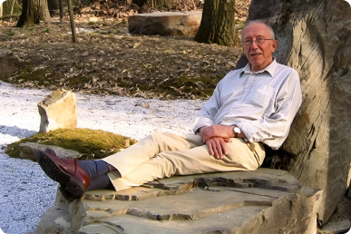

Его Философия — это Сплетение науки и духовности
В последние годы своей жизни Майк сосредоточился на объединении различных областей знаний, стремясь к гармонии между древней мудростью и передовыми научными открытиями, такими как эпигенетика и биоцентризм.
Это исследование помогло развить новое понимание взаимосвязей между сердцем и интеллектом, мужским и женским началами, внося значительный вклад в расширение осознанности.
